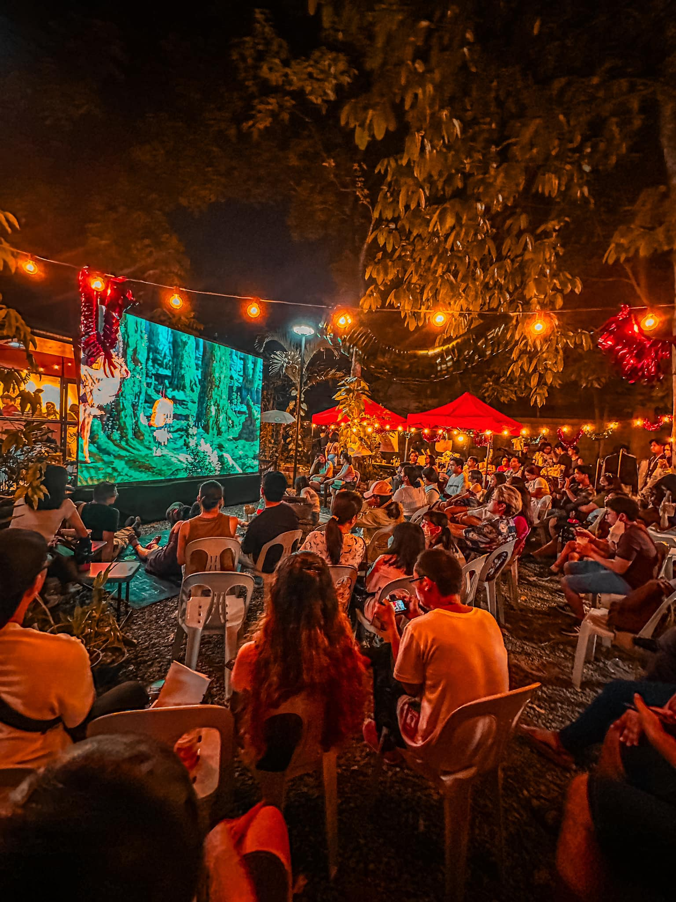
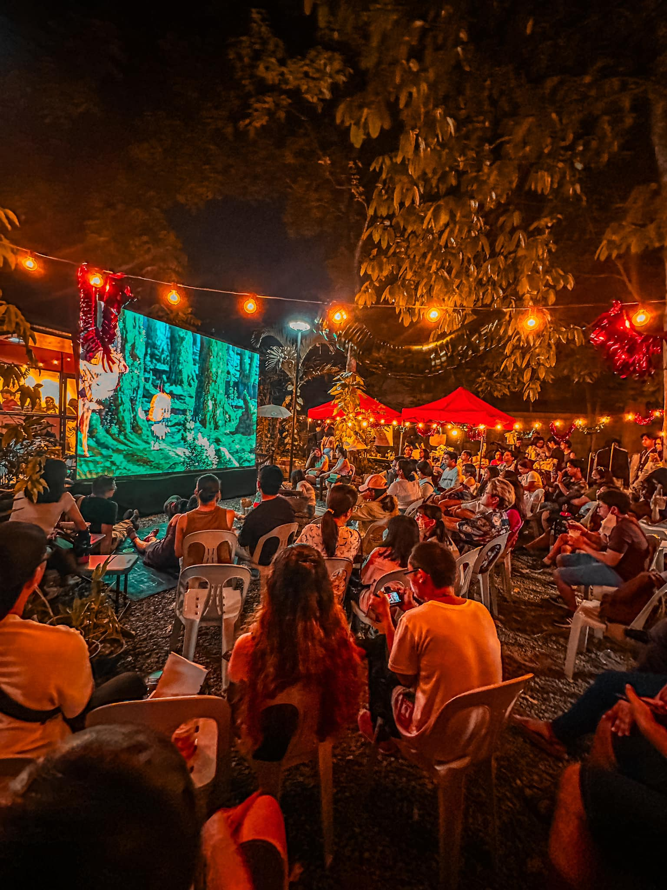
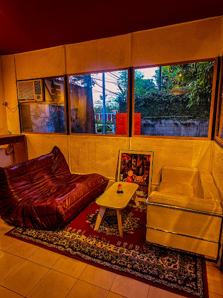
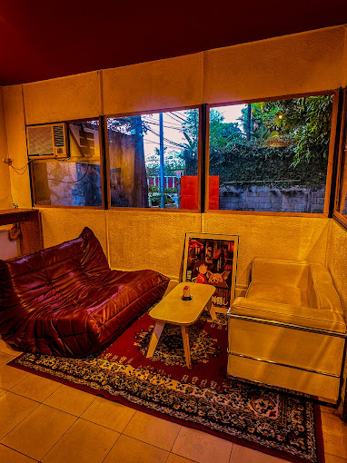

Performers

Geiko
Indie performer in the Philippines
Geiko's music journey began with playful childhood songs and evolved into a diverse exploration of genres, ultimately launching her career when her original song "sol at luna" gained unexpected attention.

Syd Hartha
Singer-songwriter from Manila, Philippines
Starting her musical journey at 12, Syd honed her craft across multiple instruments and songwriting, eventually joining Sony Music Philippines in 2018.
Clara Benin
Singer-songwriter from Manila, Philippines
Clara's laidback, enchanting vocals paired with acoustic guitar define her music. Her collaborations, TV commercials, and film contributions have made her one of the Philippines' most prominent independent musicians.
Merchants

Potherese
A little ceramic studio in Angeles City, Pampanga
Potherese Studio started with just Therese sharing her love for pottery and ceramic making. She has now taught hundreds of students from all over the Philippines.

Meraki;
A small business indulging in various forms of art.
Meraki is a small business specializing in handcrafted accessories like necklaces, keychains, and bracelets, blending artistry and personal expression.
Cookies & Crumbs
Artisan Bakery & Dessert Shop
Cookies and Crumbs is a QC-based artisan bakery specializing in homemade breads, cookies, and desserts, crafted with quality ingredients.

 


 
